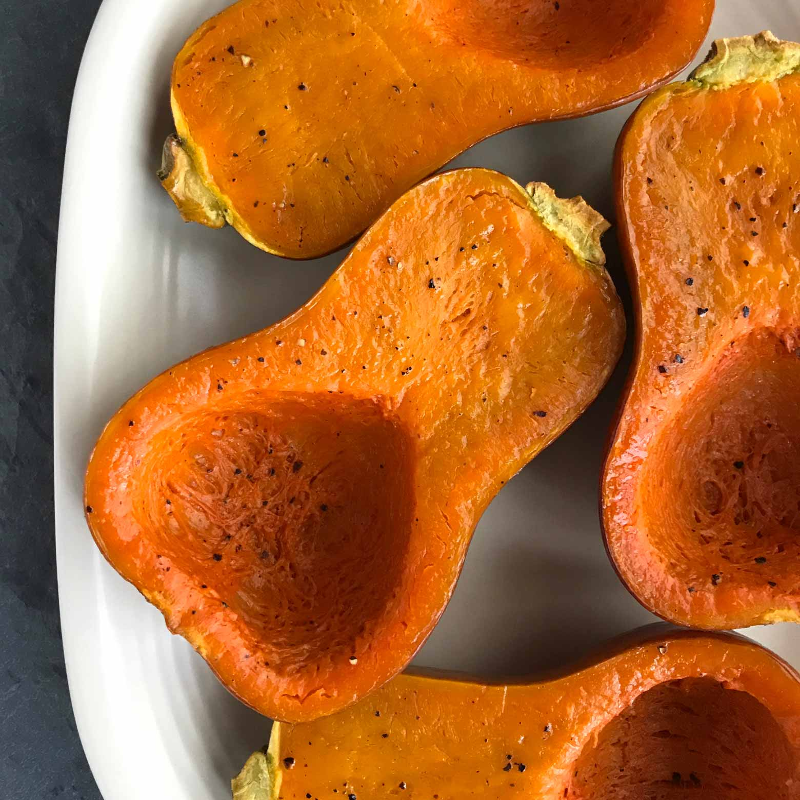

Roasted Honeynut Squash

Description
Honeynut squash looks just like mini butternut squash, but on the inside you'll find an even sweeter, deeper orange flesh. This winter squash has only been available at farmers' markets and in select grocery stores for a few years. If you see it, grab a few to try! This simple roasting method enhances the natural flavor of the squash with butter and spices.
Ingredients
- 2 medium honeynut squash, halved lengthwise and seeded
- 4 teaspoons butter
- ¼ teaspoon salt
- ¼ teaspoon ground pepper
- 1 teaspoon ground cinnamon
- 4 teaspoons pure maple syrup (Optional)
Steps
- Step 1.
Preheat oven to 425 degrees F.
- Step 2.
Arrange squash halves cut-side up on a baking sheet. Place 1 teaspoon butter in each cavity. Sprinkle with salt, pepper and cinnamon. Roast until tender, 25 to 30 minutes. Drizzle with maple syrup, if desired.